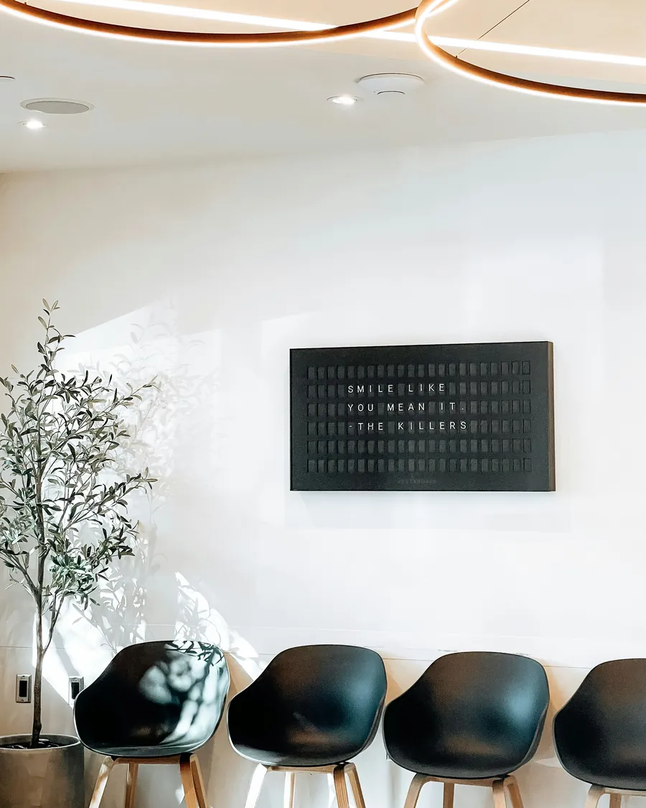
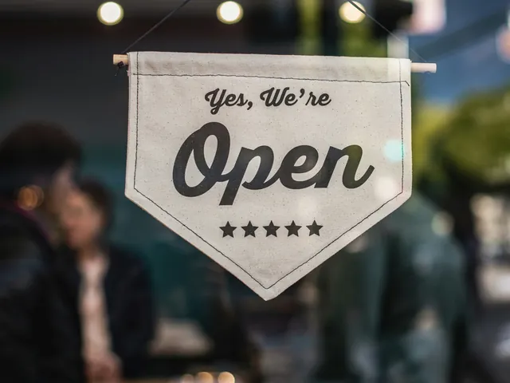
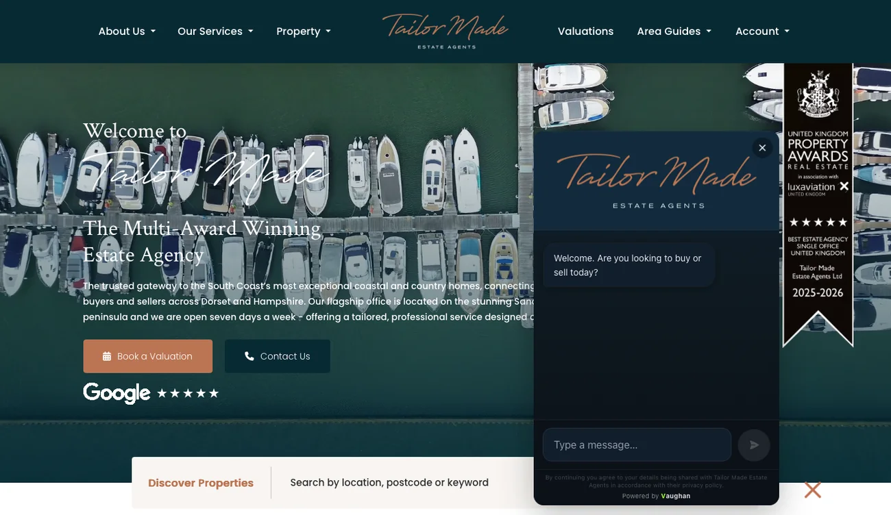
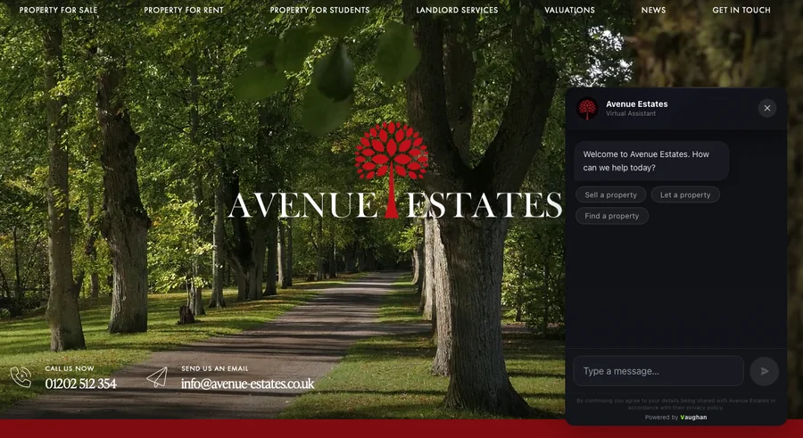
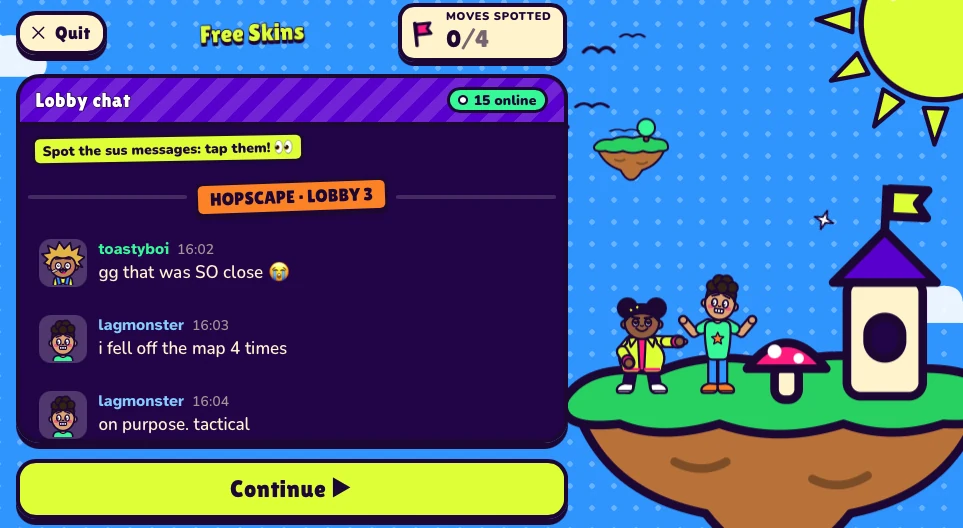
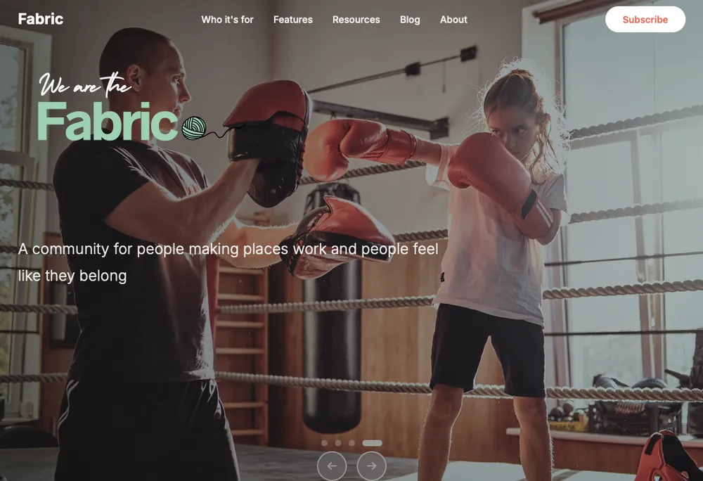
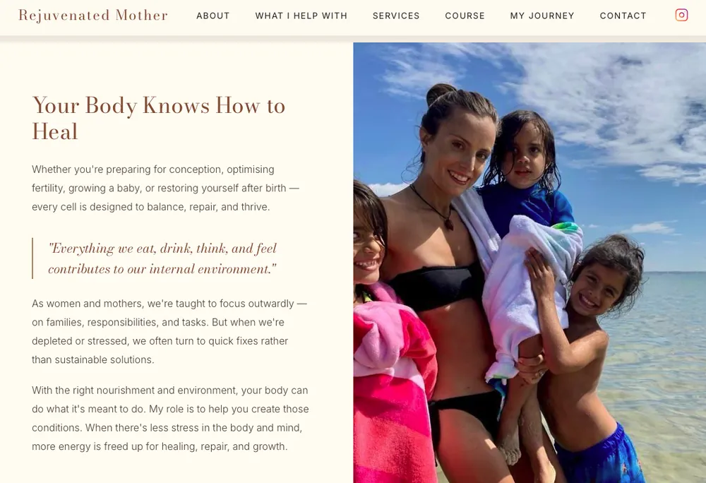

Chatacus · Property
Vaughan
Property's conversation specialist. Vaughan qualifies vendors, landlords and buyers in the agency's name and tone — so the team only calls people who are ready to move.
Glade TechIndependent technology studioPoole, UK
Technology, products and experiences that solve real problems.
GTHow the studio works
Glade Tech builds things.
Sometimes for businesses and organisations. Sometimes by turning our own ideas into products. Sometimes as digital experiences that help people understand the world they live in.
We build, improve and untangle digital things — from automation and websites to apps and bespoke tools.
Client work is delivered personally by Marc Richards.
Chatacus is our current commercial product: software that helps businesses turn website conversations into enquiries.
We're also developing interactive games and experiences that help people understand manipulation, scams, online threats and the technology around them.
In development02Products
Chatacus
Chatacus is the software product business developed by Glade Tech. Its assistants sit on a business's website, answer questions in that business's voice and turn conversations into real enquiries — day or night.
Explore Chatacus ↗How it fits together
Chatacus · Property
Property's conversation specialist. Vaughan qualifies vendors, landlords and buyers in the agency's name and tone — so the team only calls people who are ready to move.
Chatacus · Solar
Solar's lead specialist. Sunny Jim answers homeowners' questions about solar and turns those conversations into enquiries for installers.

Chatacus · Aesthetics
A smarter way to handle aesthetic enquiries. Bloom answers clinic questions with care and turns interest into enquiries.

Chatacus · Bespoke customer service
Customer service for any business — questions, requests, and knowing when to bring in a person.


“Vaughan paid for itself already.”
Avenue Estates
03Education
We're building interactive games that help young people recognise manipulation, navigate digital life and develop practical digital literacy.
Guru Simulator is an interactive educational experience exploring manipulation, persuasion, influence and digital literacy.
It takes inspiration from prebunking research and applies it to the kinds of manipulation young people may encounter online — persuasion, social pressure, influencer tactics, scams and other forms of manipulation.
Guru Simulator · In development · For schools and educational settings

A developing family of games exploring digital life, cyber safety, scams, online threats and technology.
Noob Games · In development · For schools and educational settings
Why we're building this
Research into prebunking suggests that practising recognising manipulation techniques before encountering them can help build resistance to misinformation and manipulation.
Researchers at the University of Cambridge have explored this approach through games including Bad News and Go Viral!, with research finding that gameplay can improve people's ability to recognise manipulative misinformation.
Bad News · University of Cambridge · 2019
Fake news game confers psychological resistance against online misinformation
Research →Go Viral! · University of Cambridge · 2021
Towards psychological herd immunity: cross-cultural evidence for two prebunking interventions
Research →Games can make digital manipulation something young people can experience and recognise.
Prebunking research gives us a reason to believe this approach is worth exploring.
We're applying those ideas to the situations young people actually encounter online.
Developing and testing now, with planned release for schools and educational settings.
The Cambridge research supports the underlying approach. Our own games are being developed and tested now.
01Selected work
Two examples of the studio's client work, kept here as proof that we build real things — not as a portfolio.

Platform · Live
A digital platform connecting grassroots organisers with tools, resources and community support to drive neighbourhood-level change.

Client project · Live · Poole
The digital side of a Poole-based women's health coaching practice — online booking, a service-led customer journey and a calm, considered presence.
GTAbout the studio
Glade Tech is the independent technology studio of Marc Richards.
Glade Tech is the business — where the building happens: client technology work, our own products like Chatacus, and educational experiences in development. Marc is the person behind it, and the person who delivers its client technology work.
He spent nearly a decade building production systems at one of the world's leading banks. He's also a coach, an author, and someone who believes technology should solve real problems for real people.
The studio is named after a place very dear to him, where music, nature and community came together.
Need hands-on technology help?That's Marc Richards — technology, on your terms.
marc-richards.com ↗GTContact
A product idea, a digital project, or something that doesn't fit a category yet — tell us about it.
marc@gladetech.ukLooking for day-to-day tech help or automation for your business? Head to marc-richards.com ↗